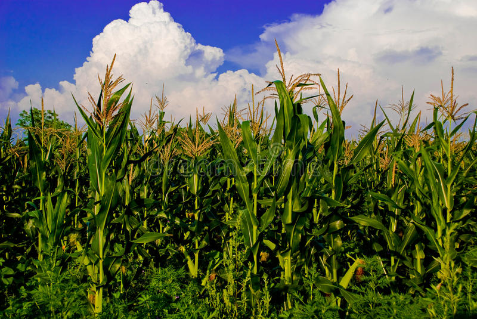

Summer crops thrive in sunny climates. They require warm soil and mild temperatures to blossom. Frost damages and kills summer plants.
Summertime plants should be planted after the last frost of the spring. Some of the best fruits and vegetables for your summer garden include:
• Corn
• Cucumbers
• Melons
• Peppers
• Tomatoes
• Okra
• Eggplants
• Grapes
• Red cabbage
Cool-season plants grow better in average temperatures. They don't require as much moisture or sunlight as summer crops.
Cool-weather crops include beets, carrots, broccoli, and spinach. These vegetables can be planted late-summer and harvested during the fall.
Grow Hearty Summer Crops
Once you've decided which plants to farm this summer, it's time to get gardening. We've listed 10 tips to help you get the most out of your crops this season.
1. Get a Head Start
Get ahead of the gardening game by starting your first round of crops indoors. If you're worried about a last-minute frost, use small flower beds to sow your seeds.
Keep your plants next to windows during the day to soak up early springtime sunshine. Use artificial lights to produce warmth and stimulate growth.
The best crops to grow indoors are hardy ones. Stick with herbs, spices, and resilient greens, like kale. They can withstand cooler temperatures better than other plants.
Once spring has officially sprung, transplant your indoor greens to your outdoor garden.
2. Prep the Soil
Before you plant your seeds, you must prepare their home. Soil prep should start two to three weeks before you plant.
Start by testing the soil's pH level. Most plants need the dirt to be neutral to slightly acidic.

Use a spreading fork or rototiller to loosen the soil. Spread manure or compost three to four inches deep. Mix in any extra fertilizers.
Once the bed is level, water your soil. Keep an eye on your gardening beds over the next few weeks.
Before you plant, check the soil's temperature. The soil needs to be warm enough for your summer plants to thrive.
3. Prune Wisely
Pruning is when a gardener selectively eliminates part of a plant. It's commonly applied to roots, buds, or branches.
Pruning improves air circulation. It enables plants to grow a particular direction, removes dead sections, and boosts the quality of its remaining flowers.
As your summer crops grow, prune away any diseased parts, like yellow leaves. You can use your thumb and forefinger to pinch off a small part of the plant. For bigger crops, gardening shears work.
Prune early in the day when the plant is dry. Try not to remove large sections of the plant. This may cause injury or interfere with the plant's ability to shade itself.
Some gardeners have mixed emotions regarding pruning vegetables, especially tomatoes. But when done in small doses to keep the plant clean and healthy, it leads to luscious fruits and veggies.
4. Try Trellising
A trellis supports plants to grow up instead of out. It keeps plants off the ground and increases space in your garden. Trellises prevent crops from sitting in soil and rotting.

Crops that respond the best to trellising are:
• Tomatoes
• Beans
• Berries
• Melons
• Peas
• Squash and pumpkins
• Cucumbers
Depending on the weight of the vegetable, the type of trellis you design may vary. Cucumbers require more sturdy materials to hold their weight. Berries, on the other hand, can grow on a small wooden trellis.
5. Start Staggering
Instead of planting all of your crops at once, stagger them. Plant the same crop every few weeks. This produces a continuous harvest throughout the summer.
Staggered, or succession, planting protects your crops from bug infestations and disease. If one round of crops is wiped out, you can rely on your next batch to be better.
Gardeners find staggered planting is best used for squash, cucumbers, and beans.
6. Partner up Your Plants
Different plants mature at different rates. Companion planting groups slow-maturing crops with fast-growing ones.
As the fast-maturing crop develop, they can be harvested sooner than their partner crop. Once the matured crop is picked, the slow-maturing ones can spread out and grow.
7. Harvest and Replace
Watch your plants grow and harvest them as soon as they're ready. The longer your fruits and veggies sit in your garden, the more likely they'll be eaten by deer, insects, or birds.
Once one crop is harvested, replace it with another. As you reach the end of the summer, replace summer crops with fall ones. This keeps your garden booming up until the first snowfall.
8. Keep the Family Together
Create an entire bed dedicated to one crop family. Label your bed for your own organization.

This makes it easy to rotate the beds and plan staggered cropping. Similar crops require the same type of care and fertilizer. They'll often mature around the same time, so you can replace the entire bed with the next round of seeds.
9. Raise Your Beds
If you don't want your garden directly on the ground, raise your beds. This adds aesthetic appeal to your garden. They make it easier to pick vegetables and fruit as they require less back strain.
Raised beds control roots and weeds from taking over your garden. They'll make your garden look more organized and prevent it from growing into your pathway.
Raised beds provide better drainage and prevent soil compaction. If you live in an area where heavy rainfall is frequent, raised garden beds stop your soil from washing away.
10. Grow Your Knowledge
As a gardener, there's always room to grow (excuse the pun). Keep yourself educated by following farming blogs and staying up-to-date with the latest technologies.
Throughout the summer, pay attention to weather patterns. Severe thunderstorms, hurricanes, or tornadoes threaten your summer crops. If a bad storm is coming, try putting a tarp over your beds to keep your fruits and veggies safe.